1. 서론
1.1. 연구배경 및 대상
흡연은 담배 등을 태워 그 연기를 흡입하는 행위로, 오랜 기간 동안 인류의 흔한 습관으로 자리 잡아왔다. 그러나 오늘날 과학의 발전은 흡연이 건강에 유해하다는 사실을 다양한 데이터에 근거하여 증명하고 있다. 또한, 건강에 대한 관심과 웰빙 트렌드의 확산에 따라 전 세계적으로 금연을 희망하는 사람들이 늘어났고, 이는 자연스레 흡연율 감소로 이어지고 있다.
<그림 1. OECD 주요국 매일흡연율 추이[1]>
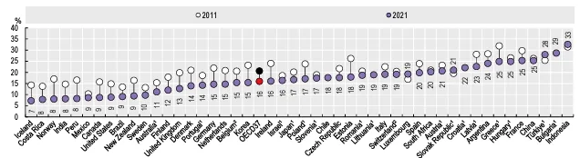
OECD에서 발표한 ‘Health at a Glance 2023’에 따르면 OECD 주요 37개국의 매일흡연율*은 2011년 평균 20.6%에서 2021년 15.9%로 감소되었다. 동 기간 한국 흡연율은 23.2%에서 15.4%로 OECD 평균 보다 더 급격하게 감소되었다.
흡연율의 감소, 즉 담배 제품에 대한 총수요가 줄어드는 상황에서 본 연구는 국내 최대의 담배 제조사인 KT&G(Korea Tobacco&Ginseng Corporation)에 대해 진행하였다. 동 기업은 1987년 4월 1일, 한국전매공사란 공기업으로 창립하였으며, 1989년 한국담배인삼공사로 사명을 변경했고, 2002년 12월 민영화되어 현재까지 민영기업으로 남아있다. 주요 사업분야로는 담배사업, 건강기능사업, 부동산사업, 기타사업(의약품∙화장품 등)이 있다.
2023년 기준 전체 매출액은 5.9조원이었으며, 담배사업 3.6조원(61.6%), 건강기능사업 1.4조원(23.8%), 부동산사업 0.6조원(9.4%), 기타사업이 0.3조원(5.2%)을 차지한다. 본 사례연구는 이들의 주력사업인 담배사업을 중심으로 수행하였다.
1.2. 연구목적
흡연을 둘러싼 부정적인 상황에도 불구하고 KT&G는 2023년, 연결 기준으로 매출액 5.9조원, 영업이익 1.2조원을 달성하였고, 2027년에는 매출액 10.2조원 달성을 자체적으로 전망하기도 하였다[2]. 특히 담배사업 부문의 매출액 연평균성장율(CAGR)은 최근 10개년 4.12%였으며, 최근 6개년은 8.66%로 과거보다 최근 더 빠른 속도로 성장하고 있다.
<그림 2. KT&G 실적 추이[3]>
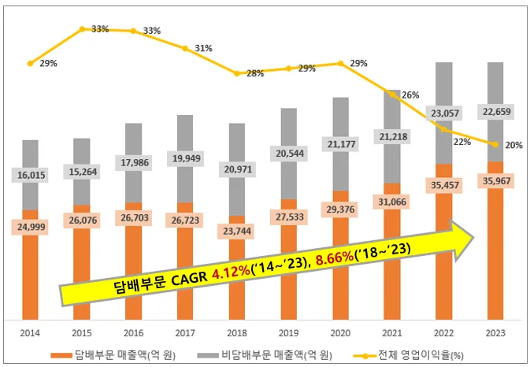
최근 KT&G 담배사업 성장세는 궐련형 전자담배 사업의 성장과 관련이 깊다. 궐련형 전자담배(Heat Not Burn, HNB)는 담배 스틱을 전기식 가열장치로 가열해 발생하는 증기를 흡연하는 제품을 뜻한다. 2017년 5월, 미국 필립모리스의 아이코스를 시작으로 동년 8월에는 영국 BAT의 글로가, 동년 11월에는 KT&G의 릴 솔리드가 국내 시장에 각각 출시되었다. 즉, KT&G는 국내 궐련형 전자담배 시장의 후발주자였으나, 출시 이후 5년만에 시장점유율 1위(47.5%)를 달성하였다.
<그림 3. 국내 궐련형 전자담배 스틱 점유율 추이[4]>
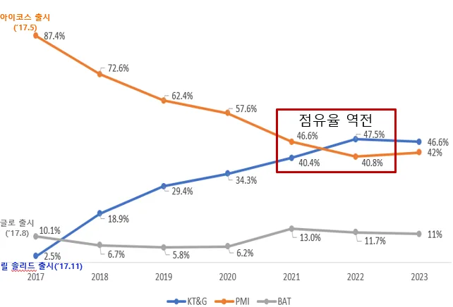
본 연구에서는 이상의 연구배경을 바탕으로 다음과 같은 2가지 연구질문을 제시하고자 한다. RQ 1. 국내∙외 흡연율 감소 추세에도 불구하고 KT&G는 어떻게 지속 성장할 수 있었는가? RQ 2. 전자담배 시장의 후발주자인 KT&G는 어떻게 국내 시장점유율 1위를 달성할 수 있었는가?
2. 이론적 배경
2.1. 연구모형
KT&G 성장 요인으로 요약되는 2가지 연구질문의 해답을 찾기 위해 다음과 같은 사례 연구모형을 구성하였다. 연구모형은 크게 이론적 배경과 KT&G 사례 분석으로 구성된다. 먼저 이론적 배경은 흡연과 관련된 선행연구 조사, 제품과 시장 관점에서의 담배산업 분석, Pavitt’s Taxonomy 이론으로 구성된다. 이후 사례분석에서는 이론적 배경 분석 내용을 바탕으로 KT&G의 성장 전략과 혁신 전략에 대해 분석하였다.
<그림 4. 사례 연구모형>
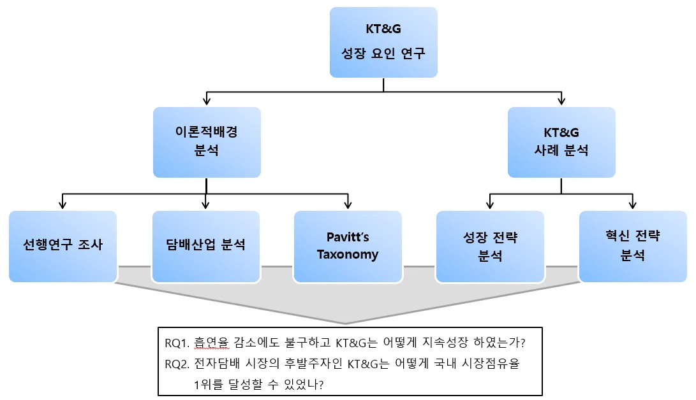
2.2. 선행연구 조사
담배 제품은 흡연 행위를 통해 소비되며, 그 과정은 필연적으로 부정적 외부효과(Negative Externality)를 동반한다. 외부효과란 어떤 경제 주체의 행위가 다른 경제 주체에게 기대치 않은 혜택이나 손해를 발생시키는 효과를 말하며 이 중 부정적 외부효과는 후자에 해당된다. 흡연은 흡연자 당사자의 건강 뿐만 아니라 간접흡연을 하는 사람의 건강에도 해로운 부정적 외부성을 창출한다[5]. 또한, 담배의 지나친 소비는 직장에서의 생산성을 떨어뜨리고, 여러 질병으로 인해 의료보험비용을 증가시키기도 한다[6].
따라서, 우리 정부에서는 흡연에 의한 부정적 외부효과 최소화를 위해 담배에 부가가치세 외 여러 명목의 세금을 부과하고 있다[7]. 그리고 담뱃갑 경고 그림 및 문구 표시 의무화, 금연 구역의 점진적 확대, 금연 지원 프로그램 시행 등 다양한 담배규제 정책을 시행하고 있음에도 불구하고 관련 정책들을 더욱 강화해야 한다는 주장도 있다[8].
이처럼 담배와 흡연에 대한 부정적 환경에서 각 제조사들은 부정적 외부효과최소화를 위해 경영전략을 변화시켜왔다. 예를 들어 담배 회사들은 필터의 성능 향상 등 타르와 니코틴 함량을 줄이기 위한 연구를 진행하여 새로운 제품들을 도입했다[9]. 또한 이들은 안전한 담배를 만드는 것을 추구하였으며[10], 담배 수요감소에 대응하고자 해외 시장에서 성장 모멘텀을 찾고 있다[11].
최근에는 연소 방식의 담배 제품과 함께 가열 방식의 전자담배가 기존 시장에 도입되었다[12]. 필립모리스는 궐련에 비해 가열 담배로부터 배출되는 잠재적 유해물질이 90% 이상 적다고 주장한 바 있으나[13], 인체 유해성과 관련하여 논란은 아직까지 지속되고 있다.
이상 선행연구 결과를 종합해볼 때, KT&G 등 담배 제조사들은 부정적 외부효과 최소화 노력이 필요하다는 시사점을 얻을 수 있다. 경영적인 측면에서는 비교적 규제가 느슨한 해외 시장을 공략하고, 궐련 대비 부정적 외부효과가 적은 전자담배 시장 선점이 필요하다. 기술적인 측면에서는 소비자의 흡연 만족도를 제고하면서 동시에 냄새 저감, 유해성 감소 등 제품 혁신이 필요하다.
2.3. 담배산업 분석
2.3.1. 제품 분석 담배의 종류는 크게 흡연제품과 비흡연제품으로 분류할 수 있다. 흡연제품으로는 궐련, 엽궐련, 전자담배 등이 있고, 비흡연제품으로는 씹는 담배, 냄새 맡는 담배, 머금는 담배 등이 있다. 현재 세계적으로 가장 대중화된 제품은 궐련이며, 최근에는 금연을 위한 보조 수단으로 전자담배 산업이 성장하고 있다.
<표 1. 담배의 종류[14]>
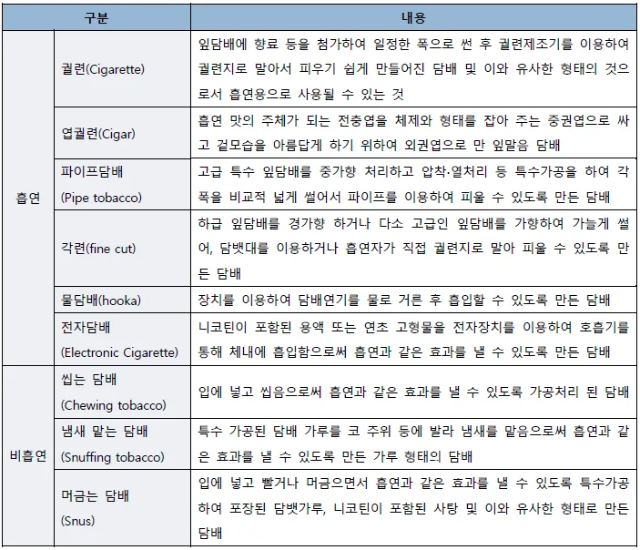
궐련(Cigarette)은 내부에 담뱃잎을 넣고 궐련지로 말은 뒤 필터를 덧댄 구조이다. 담배 끝부분을 높은 온도(600℃~900℃)로 연소하기 때문에 이 과정에서 발생되는 연기 속에 유해한 화학성분이 많고, 냄새가 남게 된다.
궐련형 전자담배(Heat Not Burn Tobacco)는 전기식 가열장치(디바이스)에 고체형 스틱(담뱃잎과 필터로 구성)을 삽입하여 250℃~350℃로 찌는 방식이다. 연소가 아닌 가열 방식이기 때문에 담뱃재가 거의 없고, 냄새도 적다는 장점이 있다.
액상형 전자담배(Electronic Cigarette)는 니코틴 농축액과 향료, 기타 희석제로 구성된 액상을 전용 디바이스를 통해 100℃~250℃로 가열하고, 발생되는 증기를 흡연하는 방식이다. 다만, 시중에 유통되는 브랜드 수가 매우 많고, 제조사마다 액상에 대한 레시피가 다를 수 있으므로 사용상의 주의가 요구된다.
<표 2. 주요 제품별 세부 비교[15~17]>
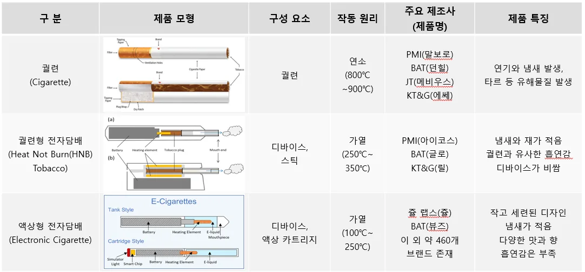
2.3.2. 시장 분석 ‘Global Trends in Nicotine’ 보고서에 따르면 2020년, 글로벌 담배 시장 규모는 약 8.5천억 달러로 추정된다. 그 중 궐련은 시장규모가 7.2천억 달러로 전체의 84.1%를 차지하고 있다. 이어 궐련형 전자담배는 2.4%, 액상형 전자담배는 2.5% 정도로 궐련에 비해 상대적으로 작은 시장규모를 구성하고 있다.
하지만 시장규모의 4개년(2017~2020) 연평균성장율(CAGR)을 살펴보면 궐련형 전자담배가 53.5%, 액상형 전자담배가 23.1%, 궐련이 2.7%로 전자담배의 성장세가 두드러진 것을 알 수 있다. 이는 기존 궐련을 사용하는 소비자들이 건강에 대한 인식을 변화하고, 금연을 위한 보조 수단으로써 전자담배를 사용하는 등 궐련에서 전자담배로 수요가 이전되고 있기 때문으로 추정된다.
<표 3. 2020년 제품별 시장규모 및 변화율[18]>
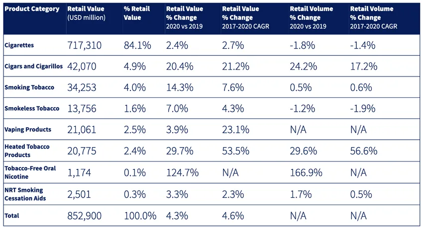
2020년을 기준으로 각 담배 제품별 글로벌 주요 Player 현황은 아래와 같다. KT&G는 궐련과 궐련형 전자담배 등 2가지 제품군을 판매하고 있으며, 글로벌 시장에서 각각 1.3%, 2.8%의 시장점유율을 가짐으로써 영향력이 높지 않은 상황이다.
<표 4. 2020년 제품별 주요 Player 현황[19]>
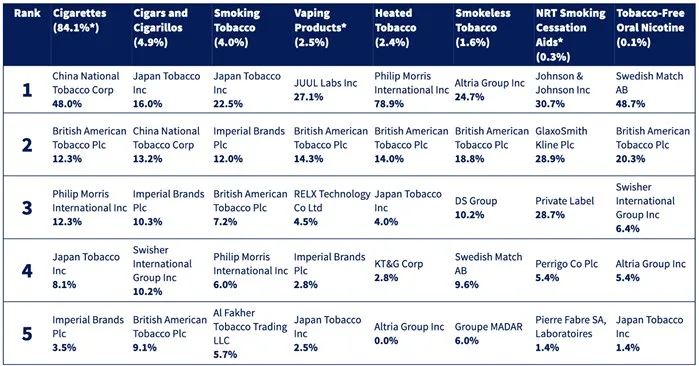
<그림 5. 국내 담배 제품 판매량 추이[21]>
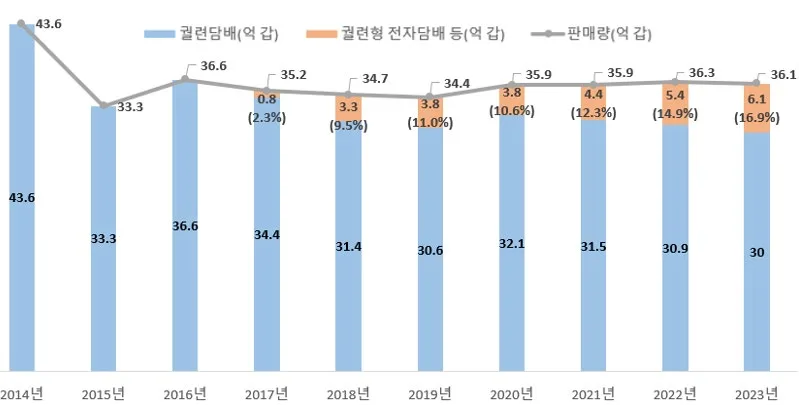
반면, 국내 담배시장을 놓고 보면 궐련이 약 15조원, 궐련형 전자담배가 약 2조원의 시장규모를 가진다. 기획재정부 자료에 따르면 궐련형 전자담배 판매량 비중이 2017년 2.3%에서 2023년 16.9%로 빠르게 확대되고 있는 상황이다.
그리고 KT&G는 국내 담배시장 중 궐련에서 약 66%, 궐련형 전자담배에서 약 47% 점유율을 차지함으로써 시장점유율 1위의 위치에 있다. PM(Philip Morris), BAT(British American Tobacco), JT(Japan Tobacco)와 같은 Key Player가 있음에도 불구하고, 자국 담배회사가 60% 넘는 점유율을 유지하는 것은 세계에서 KT&G가 거의 유일하다[20].
2.4. Pavitt’s Taxonomy
Keith Pavitt은 혁신의 다양한 유형, 모습이 산업 분야별로 다를 것이라고 가정하고, 영국에서의 주요 혁신 데이터를 바탕으로 혁신을 총 4가지의 유형으로 나누었다. 각 유형은 공급자 주도형, 규모집약형, 전문공급자형, 과학 기반형을 포함한다[22].
Pavitt 관점에서 담배산업을 분석하기 위해서는 궐련과 전자담배로 제품군을 나누어 살펴볼 필요가 있다. 먼저 궐련산업의 경우, 오랜 역사를 지닌 산업으로 기계화된 공정을 통해 제품을 생산하는 전통적인 제조업에 해당된다. 따라서 공급자주도형에 해당되며 가격에 민감한 소비자 특성으로 기술궤적이 공정혁신에 있다. 상표, 마케팅, 광고 등 비기술적 요소가 전유체계를 결정한다는 특징이 있다.
다음으로 전자담배 산업은 핵심 디바이스가 전기식 가열장치이기 때문에 전기전자 산업에 해당되므로 과학기반형에 속한다. 소비자들은 가격과 성능 모두 민감하다는 특징이 있다. 따라서 제품 성능향상을 위해 R&D 부서를 통한 기술혁신을 지속하고, 그 결과물을 특허 출원을 통해 전유성을 확보하는 것이 중요하다.
<그림 6. 담배산업의 Taxonomy>
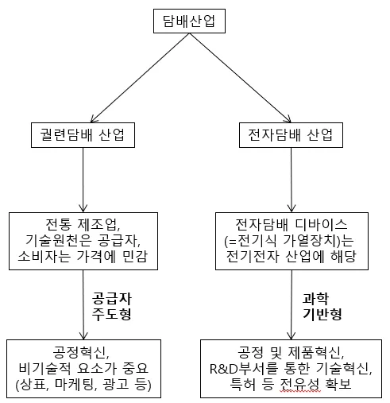
3. KT&G 사례분석
3.1. Historical Timeline
3.1.1. 변혁기(1987~2005)
1987년 창립 이후 2005년까지는 대내외 환경 변화로 인해 KT&G의 변혁기로 볼 수 있다. 가장 큰 변화는 1988년 국내 담배시장의 완전 개방이다. 필립모리스 등 글로벌 담배 회사들이 막강한 자금력과 브랜드 인지도를 앞세워 국내 시장을 위협하기 시작했다.
2002년 말, 한국담배인삼공사는 민영화되면서 KT&G로 사명을 변경했다. 당시 내부 인터뷰에 따르면, 독점을 유지하던 정부 조직이 글로벌 경쟁에 노출되는 것 자체도 큰 충격이었는데, 더 나아가 민영화가 추진되면서 직원들의 위기감과 불안감이 컸다고 한다[22].
즉, 변혁기는 공기업의 DNA가 강했던 KT&G가 생존 자체를 위협받던 심각한 환경 변화의 시기였다. 그럼에도 불구하고 KT&G는 초슬림 담배(직경 5.4mm) 출시를 통해 틈새시장을 공략하였고, 1988년 중동 수출을 시작으로 글로벌 시장 진출을 진행하게 되었다. 3.1.2. 글로벌 도약기(2006~2016)
2006년부터 2016년까지 이어진 글로벌 도약기 동안에도 KT&G를 둘러싼 환경은 녹록치 않았다. 특히 담배 제품에 대한 정부의 규제가 심화되었다. 2012년부터 음식점 등 금연구역이 확대되었고, 2015년에는 담배 가격이 4,500원으로 기존 대비 2,000원 인상되었으며, 2016년에는 담배 포장지에 경고문구가 시행되었다. 이러한 정부 규제는 국내 성인 흡연율에 직접적으로 영향을 미쳐, 2005년 28.8%에서 2016년 23.9%로 감소하는 등 KT&G의 부정적 환경으로 작용하였다.
이처럼 국내 수요 감소와 정부 규제에 맞서, KT&G는 이 시기에 적극적으로 해외 시장을 공략하게 되었다. 구체적으로 다양한 해외 거점 시장에 공장을 준공하였는데, 2008년 터키, 2009년 이란, 2010년 러시아에 공장을 설립하였고, 2011년에는 인도네시아 담배회사인 트리삭티(Trisakti)를 인수하였다. 3.1.3. 패러다임 전환기(2017~현재)
2017년부터 궐련형 전자담배(HNB)가 국내 시장에 새롭게 진입하였다. 필립모리스가 ‘아이코스’를 최초로 시장에 선보였으며, BAT가 ‘글로’를, KT&G가 ‘릴’을 차례대로 출시하였다. 특히 필립모리스는 전자담배를 기존 궐련에 비해 90% 덜 위해하다고 강조했고, 기존 궐련처럼 담뱃잎을 태우는 것이 아니라 가열하는 것이어서 덜 위해하다고 강조하였다[23]. 또한 궐련과는 다르게 담배 냄새가 배지 않는 등 장점들로 소비자들의 수요도 HNB로 옮겨가고 있다.
그 결과, KT&G 입장에서도 궐련 사업은 정체 상태였던 반면, HNB 사업은 2018년부터 2023년까지 연평균 매출액 성장률(CAGR) 35%를 기록하며 급격히 성장하였다. 따라서 2017년부터 현재까지는 KT&G의 주력 사업이 궐련에서 HNB로 패러다임이 전환되고 있는 시기로 볼 수 있다.
KT&G는 다양한 HNB 라인업을 시장에 내놓음으로써 소비자들의 니즈를 충족시키고자 하였는데 2017년 릴 솔리드, 2018년 릴 하이브리드, 2022년 릴 에이블이 이에 해당된다. 또한 한국을 제외한 글로벌 시장에 필립모리스가 KT&G의 HNB 제품을 전속으로 판매하겠다는 계약을 2020년, 2023년에 각각 체결하여 현재까지도 글로벌 시장을 확장하고 있다.
<그림 7. KT&G Historical Timeline>
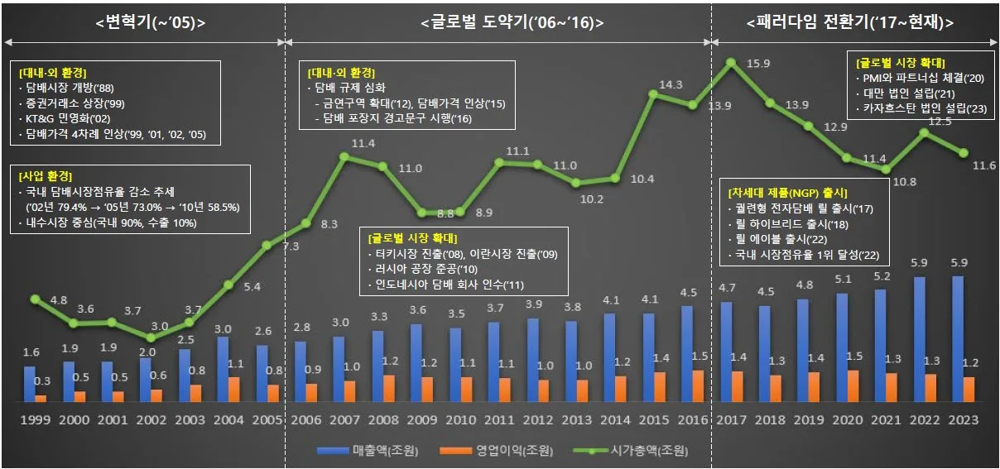
3.2. 성장전략 분석
3.2.1. 틈새시장 진출 궐련은 직경과 길이에 따라 나노슬림, 수퍼슬림(초슬림), 100’s, 슬림, 레귤러 타입으로 나뉠 수 있다. 이 중 레귤러 타입은 두께 7.8mm, 길이 84mm에 해당되며, 글로벌 시장의 약 96%를 차지한 주류 제품에 해당된다. 그리고 두께 5.4mm, 길이 100mm의 초슬림 타입이 2.1%를, 두께 7mm의 슬림 타입이 1.9%를 차지하고 있다[24].
<그림 8. 궐련의 크기별 분류[25]>
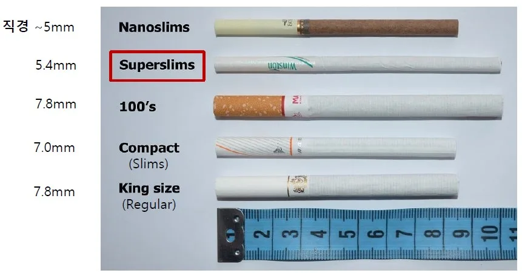
레귤러 타입은 시장규모는 가장 크지만 이미 글로벌 메이저 업체들이 장악한 시장으로, KT&G는 이들과의 브랜드, 기술, 품질 격차 등으로 인해 현실적으로 경쟁이 어렵다는 판단을 하였다[26]. 이와 같은 배경으로 KT&G는 1996년, 두께 5.4mm의 초슬림형 궐련 제품 ‘에쎄’를 출시하여 틈새시장을 공략하게 된다.
특이할 점은 단순히 얇은 궐련을 만든 것이 아니라, 저타르 기술을 함께 접목시킨데 있다. 궐련의 타르 함유량은 최초 담뱃잎의 선택과 블렌딩, 필터 설계 기술, 궐련의 직경과 길이에 따라 조절이 가능하다. 1996년 출시된 최초의 ‘에쎄 클래식’은 개비 당 6.5mg의 타르량을 함유했지만, 2007년 ‘에쎄 수 0.1’에서는 그 이름이 의미하듯 타르량을 0.1mg까지 감소시켰다.
<그림 9. 연도별 에쎄 타르량 변화>
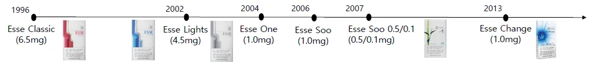
이는 소비자들의 건강과 웰빙에 대한 니즈를 고려한 결과로 초슬림형 궐련을 저타르화 함으로써 ‘얇은 담배는 보다 부드럽고, 순하고, 덜 유해하다’라는 에쎄만의 브랜드 이미지를 구축하게 된다. 또한, 흡연이 가진 부정적 외부효과 측면에서 에쎄는 스멜 케어(Smell Care) 기술을 접목하여 부정적 효과를 최소화하였다. 그 예로, 2013년에는 입냄새 저감캡슐을 적용한 ‘에쎄 체인지’를 출시했고, 손 냄새 저감기술을 적용한 필터 개발을 통해 2020년에는 ‘에쎄 체인지 프로즌’을 출시하였다. 이를 통해 냄새 저감 궐련에 대해 증가하는 소비자들의 수요를 만족시켰으며, 국내 시장점유율 30% 내외로 오랜 기간 1위를 달성 중이다.
또한, 에쎄는 글로벌 시장에서도 초슬림 궐련으로 시장을 한정했을 때 점유율 36%로 1위를 달성하고 있다. 이와 같은 에쎄의 성공은 기존 고타르, 레귤러 위주의 시장에서 저타르, 초슬림의 차별적 제품 개발을 통한 틈새시장을 공략한 점에 기인한다. 틈새시장 진출 전략은 글로벌 시장에서도 유효했으며, 괄목할 만한 성장을 보이고 있다. 2023년 KT&G의 해외궐련 사업 매출액은 에쎄 등 판매 호조에 힘입어 1조1천394억원으로 역대 최대 기록을 경신하였다[27].
<그림 10. 에쎄 국내 시장점유율 추이[28]>
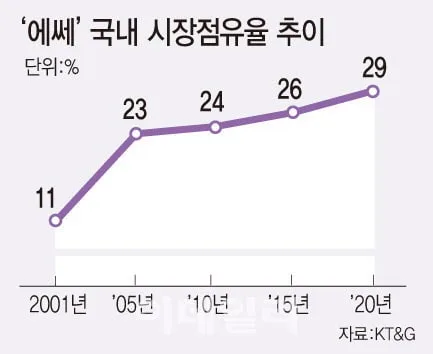
<표 5. 글로벌 초슬림 담배 시장점유율[29]>
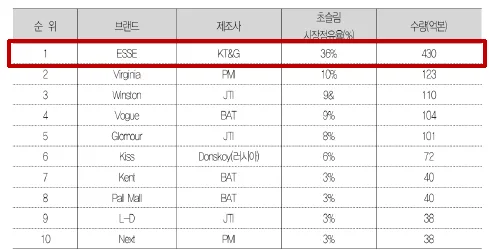
3.2.2. 글로벌 시장 개척 KT&G의 변혁기였던 1987년부터 2005년까지 가장 큰 위협요인과 변곡점은 바로 1988년 국내 담배 시장의 완전 개방이었다. 글로벌 담배 제조사들이 국내 시장에 진입하면서 경쟁이 심화되었고, 이로 인해 KT&G의 국내 시장점유율도 감소세를 보였다. 또한, 흡연의 유해성에 대한 과학적 증거가 증가함에 따라 건강을 중시하는 소비자들이 이탈하면서 국내 흡연율이 지속적으로 감소하였다. 우리 정부도 흡연의 부정적 외부효과를 줄이기 위해 세금 부과, 금연구역 확대, 담뱃갑 경고문구 시행 등 직∙간접적인 규제를 지속적으로 강화해왔다.
이러한 난관 극복을 위해 KT&G는 1988년 중동 수출을 시작으로 현재까지 글로벌 시장을 적극적으로 개척하고 있다. 여기서도 틈새시장 전략이 유효했는데, 글로벌 빅3(필립모리스, BAT, JT)가 장악하고 있는 지역을 피해 중동, 러시아, 동남아시아 등 신흥국가를 효과적으로 공략하여 글로벌화에 성공할 수 있었다.
예를 들어, 2012년에 진출한 인도네시아는 우리나라보다 담배시장이 3배 이상 크고, 한류의 영향으로 인해 한국 제품에 대한 호감도가 크다는 장점이 있었다국가의 문화적 특성, 소비자 트렌드, 외교적 관계 등 다양한 요소를 고려했음을 알 수 있다.
<그림 11. 글로벌 시장 진출 Timeline>
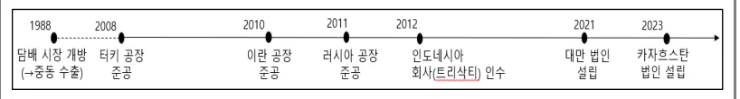
KT&G의 초슬림, 저타르 제품인 에쎄는 해외에서도 큰 성공을 거두게 된다. 건강에 대한 관심 확대와 웰빙 트렌드 확산은 우리나라를 비롯한 글로벌 추세였기 때문이다. 에쎄 수출은 2001년에 시작됐으며 수출 물량도 큰 폭으로 늘어 10년만에 연간 200억 개비 이상 팔리는 제품이 됐으며, 이제는 전 세계 초슬림 담배 소비자 3명 중 1명이 선택하는 리딩 브랜드로 자리잡았다[31]. 그 결과, 에쎄는 해외궐련 판매량 절반 이상을 차지하며 KT&G의 글로벌 톱 티어(Top-tier) 도약에 주도적인 역할을 하고 있다[32].
이처럼 레귤러, 고타르 위주의 해외 시장에서 에쎄 등 초슬림, 저타르 궐련의 틈새시장 공략은 성공하였고, 그 결과는 KT&G의 해외 담배사업 부문의 매출액 증가로 이어졌다. 전체 담배사업 매출액 중 해외사업 비중이 2007년에는 16% 였지만 2022년에는 38%로 크게 증가하였다. 동 기간 매출액은 3,793억에서 10,102억으로 16개년 CAGR 6.8% 수준으로 성장하는 모습을 보였다. 이는 KT&G가 기존 내수 독점기업에서 글로벌 담배 기업으로 변화한 것을 의미한다.
<그림 12. 국내∙외 담배사업 매출액 및 비중 변화[33]>
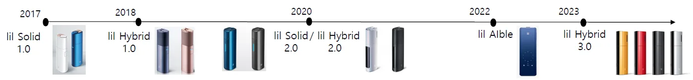
3.2.3. 전자담배로의 패러다임 전환 전자담배는 크게 궐련형과 액상형으로 구분되며, KT&G는 2017년 릴 솔리드 1.0을 시작으로 현재까지 궐련형 전자담배(HNB)의 끊임없는 제품 혁신을 지속하고 있다. HNB는 기존 궐련과 유사한 흡연감을 제공하면서 유해성은 줄이고 냄새와 재가 적다는 장점을 가지고 있다.
이러한 장점은 HNB가 전기식 가열장치인 디바이스 가열을 통해 연초 역할을 하는 스틱을 찌는 방식으로 작동하기 때문이다. 기존 궐련은 높은 온도에서 연소 또는 불완전 연소하며 여러 유해 화학물질을 포함한 연기(Smoke)를 발생시킨다. 반면 HNB는 가열방식으로 화학적 연소가 일어나지 않으며, 연기가 아닌 고체 또는 액체 미립자로 구성된 에어로졸(Aerosol)을 발생시킨다. 연기와 달리 에어로졸은 연소 부산물이 없고, 상대적으로 덜 자극적이다는 특징이 있다.
KT&G는 2017년부터 현재까지 지속적으로 HNB 제품 혁신과 포트폴리오를 다양화하고 있다. 제품 라인업은 릴 솔리드, 릴 하이브리드, 릴 에이블 등 크게 3가지 제품군으로 구성된다.
먼저 2017년 출시된 릴 솔리드 1.0은 연속 3회 흡연이 가능하다는 특징으로 연속 흡연이 불가능한 필립모리스의 아이코스 제품 대비 큰 장점이 있었다. 이후 2020년, 릴 솔리드 2.0은 인덕션 히팅시스템을 도입하여 일정한 가열로 균일한 흡연감을 제공하는 것으로 평가받는다.
릴 하이브리드 1.0은 2018년 출시되었으며, 업계 최초로 액상 카트리지를 추가하여 가열된 증기가 스틱을 통과, 더욱 풍부한 연무량을 제공해주는 특징이 있다. 2020년에는 릴 하이브리드 2.0 출시로 OLED 디스플레이를 탑재하였으며, 스틱을 디바이스에 삽입하면 자동으로 예열이 시작되는 스마트 온∙오프 기능을 추가하였다.
릴 에이블은 2022년 출시되었으며, 스마트폰과 디바이스 간 연동이 가능하다. 이를 통해 디바이스에서 전화∙문자∙앱 알림 등 데이터 송수신으로 소비자들의 편의성을 제고했다는 평가를 받고 있다. 또한 주변의 온∙습도를 자동으로 감지하여 최적의 온도로 가열하거나, 배터리 상태를 모니터링하여 사용자에게 알림을 제공해주고 있다.
<그림 13. KT&G 궐련형 전자담배 Timeline>
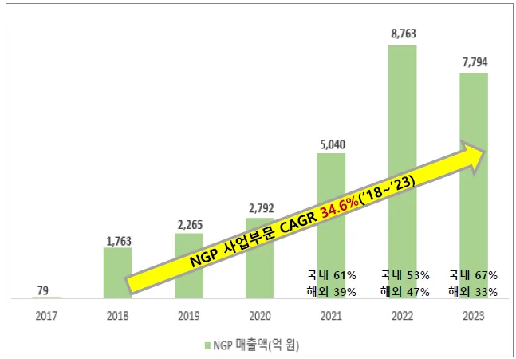
KT&G는 이러한 HNB 제품군을 차세대 제품(Next Generation Product, NGP)으로 부르고 있다. 궐련에 비해 HNB가 가진 상대적인 장점들로 인해 KT&G의 NGP 사업 부문의 매출액은 2018년 1,763억원에서 2023년 7,794억원으로 비약적으로 증가하였다. 이는 6개년 CAGR 34.6%에 달하는 높은 수치로 NGP 사업 부문이 새로운 성장동력으로 자리매김했음을 의미한다. 국내 시장점유율에서도 필립모리스, BAT, JT를 제치고 2023년 46.6%로 1위를 달성 중이다.
<그림 14. NGP 사업부문 매출액 추이[34]>
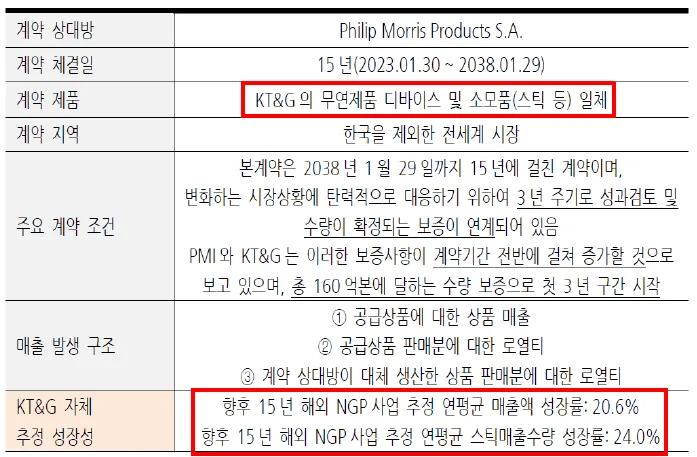
이처럼 국내 시장에서 KT&G의 선전에도 불구하고 글로벌 시장으로 범위를 확장하면 <표 4>를 통해 알 수 있듯이, 필립모리스가 78.9%, KT&G는 2.8%의 점유율을 확보하고 있다. 즉, HNB 시장에서 압도적인 경쟁력을 가진 Player는 필립모리스이나, KT&G는 이러한 필립모리스와 2020년 해외 판매 계약을, 2023년 1월 30일에는 15년 장기 계약을 새롭게 체결하게 된다.
계약의 주요 내용은 KT&G의 무연제품 디바이스 및 스틱 등 소모품 일체를 한국을 제외한 글로벌 시장에 필립모리스가 판매를 하겠다는 내용이다. 이로써 필립모리스 입장에서는 더 많은 궐련 흡연자를 HNB로 전환하여 시장을 확대할 수 있고, KT&G로서는 이들의 영업망을 활용하여 향후 15년간 해외 NGP 사업 부문 매출액 CAGR 20.6%를 달성할 것으로 추정되고 있다.
<표 6. KT&G-필립모리스 해외 판매 계약[35]>
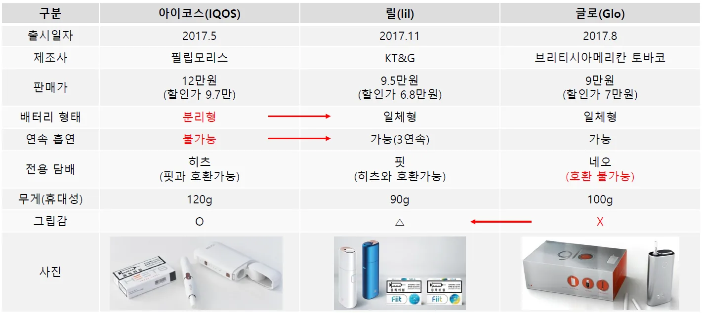
3.3. 혁신전략 분석
3.3.1. Fast Follower 국내 HNB 시장에서 선도자(First Mover)는 필립모리스로 2017년 5월, 아이코스 최초 버전을 출시하였다. 동년 8월 BAT가 글로를, 동년 11월 KT&G가 릴 솔리드를 출시함으로써 KT&G는 후발주자(Late Mover)에 해당된다.
선도자가 후발주자에 비해 가지는 가장 큰 장점은 초기시장을 일시적으로 독점하여 소비자 Lock-in이 가능하다는 것이다. HNB 제품의 특성상 10만원 상당의 디바이스 구매가 필수적으로 전환비용(Switching Cost)이 높다고 할 수 있으며, 동일 제조사의 스틱 사용을 권장한다. 특히 HNB 선도자인 필립모리스의 경우 이미 궐련 부문에서 말보로(Marlboro)라는 압도적 브랜드 경쟁력을 가지고 있고, 아이코스를 한번 구매하게 되면 전용 스틱인 히츠(HEETS)를 지속적으로 구매해야 하는 소비자 Lock-in 현상이 발생된다.
따라서 후발주자인 KT&G 입장에서 선도자 Lock-in을 해제하기 위한 전략이 필요하였다. 일반적으로 압도적인 기술력 또는 새로운 서비스를 바탕으로 혁신하거나, 전환비용을 낮추어 자사 제품으로 고객전환을 유도하는 전략이 대표적 Lock-in 해제 전략에 해당된다. 여기서 KT&G는 일체형 배터리 아키텍처 도입으로 소비자 편의성을 제고하고, 전용 스틱인 핏(FIIT) 외에 아이코스용 히츠와의 호환도 가능하여 소비자들의 전환비용을 낮추는데 성공하였다.
<표 7. 제조사별 궐련형 전자담배 초기 모델 비교>
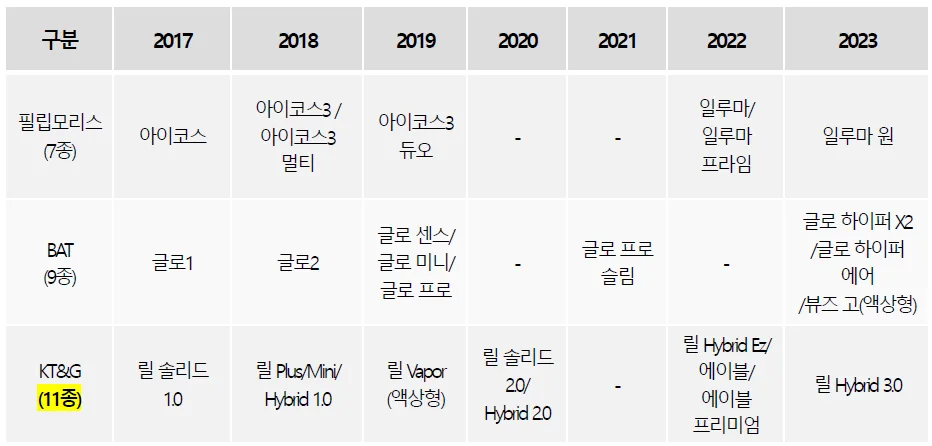
2017년 5월에 필립모리스가 출시한 아이코스의 경우, 배터리 분리형으로 충전장치와 가열장치가 별도로 존재하였다. 따라서 아이코스는 한 번 사용 후 다시 흡연하려면 5분 가량 충전해야 하는 불편함이 존재했다[36]. 동년 8월 BAT가 출시한 글로는 배터리 일체형으로 연속 흡연은 가능하였으나, 그립감 및 다소 큰 디자인으로 휴대성이 떨어진다는 단점이 있었다. 그리고 글로는 히츠나 핏과는 호환사용이 불가능하여 오직 네오(Neo)만 사용이 가능했다.
반면, 동년 11월 출시한 KT&G 릴 솔리드는 배터리와 가열장치를 일체형으로 설계하여 연속 흡연이 가능하였으며, 한 번 충전으로 연속 20개비 이상 흡연이 가능하다는 장점이 있었다. 또한, 히츠와의 호환이 가능하여 아이코스와 글로의 장점만 모았다는 평가를 받았다[37]. 이와 같이 KT&G는 제품혁신과 전환비용 최소화 전략으로 선도자 Lock-in을 해제하였고, 이후 경쟁사 대비 다양한 제품을 신속하게 출시하는 Fast Follower 전략을 펼치게 된다.
일반적으로 Fast Follower 전략은 불확실성이 제거된 매력적인 시장을 찾아내 집중 투자하여 선도자를 순식간에 따라잡고, 시장을 지배하는 전략이다. 즉, 신제품과 신기술을 개발하는 속도가 관건이라 할 수 있다. 2017년부터 2023년까지 KT&G는 총 11종의 신제품을 출시하면서 경쟁사인 필립모리스(7종)와 BAT(9종) 보다 제품화 소요 시간인 Lead Time을 최소화하였다. 출시된 신제품은 경쟁사 또는 자사 제품의 단점을 보완함으로써 소비자 니즈를 선점하고자 하였다.
<표 8. 제조사별 제품 출시현황>
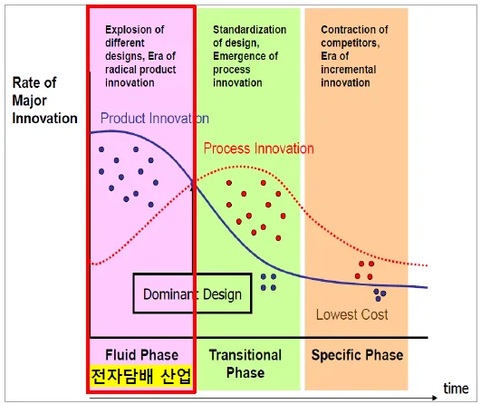
3.3.2. 특허 혁신 Utterback(1994)은 공급자(기업)의 관점에서 330개의 혁신, 77개 기업의 패턴을 분석하였다. 그리고 7가지의 가설 검증을 통해 시간에 따른 혁신 현상의 동적 패턴이 있음을 발견하고, 각 특징에 따라 유동기(Fluid Phase), 전환기(Transitional Phase), 구체기(Specific Phase)로 구분하였다[38].
<그림 15. 혁신의 패턴[39]>
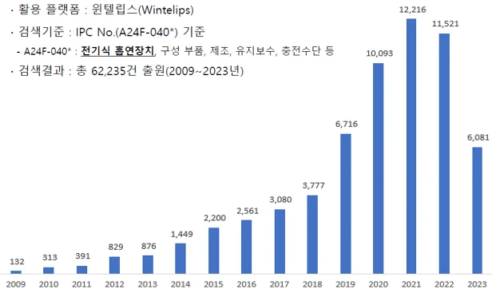
전자담배 산업을 Utterback 관점에서 살펴보면 다음과 같은 특징으로 유동기에 해당된다. 첫 번째로, 시장에 지배적 디자인(Dominant Design)이 나오기 전으로 경쟁업체가 매우 많고, 제품 다양성이 높다는 점이다. <표 8>을 참고하면 전자담배 시장의 Key Player간 신제품 경쟁이 치열하며, 짧은 기간동안 다양한 제품을 경쟁적으로 출시하고 있음을 알 수 있다. 두 번째로 Player간 특허 경쟁이 발생하고, 출원 수가 급증한다는 점이다. 전자담배에 대한 글로벌 출원 현황을 조사한 결과, <그림 16>과 같이 특허의 양적 성장이 이루어지고 있다. 이는 본 산업이 유동기 단계로 제품혁신(Product Innovation) 단계에 있음을 의미한다.
<그림 16. 글로벌 전자담배 특허 출원 현황>
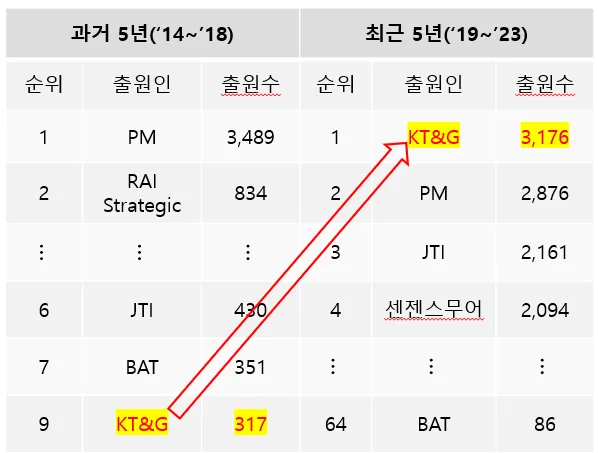
이처럼 전자담배 산업은 현재 유동기에 있기 때문에 치열한 경쟁에서 생존하기 위해서는 특허 혁신을 통해 전유성을 확보하여야 한다. <표 9>는 <그림 16>을 5년 단위의 시간으로 나누어 각 Player 별로 출원현황을 살펴본 결과이다. 여기서 특이할 점은 KT&G 특허 출원수가 과거 5년(2014~2018) 대비 최근 5년(2019~2023) 동안 급증하였음을 알 수 있다. 구체적으로 과거 5년은 총 317건을 출원하여 9위 수준이었으나, 최근 5년은 총 3,176건을 출원하여 필립모리스 등 리딩 컴퍼니를 제치고 가장 많은 출원수를 기록하였다.
<표 9. 주요 Player별 특허 출원현황>
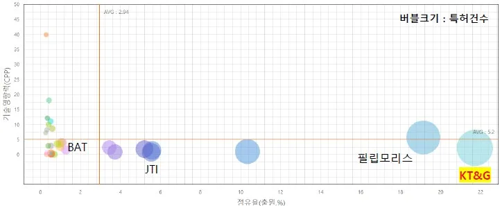
다음은 KT&G 특허경쟁력을 점유율과 기술영향력 관점에서 주요 Player들과 비교해보았다. 여기서 점유율은 모든 주체의 출원수 대비 특정 주체의 출원수를 나타낸 것으로 점유율이 높을수록 연구개발과 기술혁신이 활발하다는 의미이다. 다음으로 기술영향력(CPP, Citations per Patent)은 특정 주체의 등록특허 수 대비 해당 주체 등록특허의 피인용 수를 나타낸다. 기술영향력이 높을수록 해당 기술 분야에 있어 주요 특허 또는 원천 특허를 보유하고 있음을 의미한다.
<그림 17>과 <그림 18>을 통해 KT&G는 현재 전자담배 부문에서 국내 특허
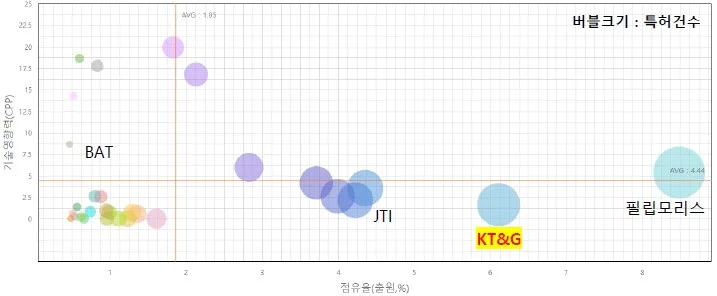
점유율 1위(21.72%), 글로벌 2위(6.11%)를 달성하고 있음을 알 수 있다. 그리고 CPP는 국내 시장에서 2.2(전체 Avg 5.2), 글로벌 시장에서 1.65(전체 Avg 4.44)를 나타내어 모든 주체들의 CPP 평균보다는 낮은 상황임을 알 수 있다.
따라서 이상 결과를 종합해보면 전자담배 산업은 현재 유동기(Fluid Phase)로 Player간 치열한 특허 경쟁이 발생 중이고, 특히 KT&G는 특허점유율 측면에서 국내∙외 시장 모두 최상위권을 달성하여 전유성을 확보 중인 것으로 판단된다.
<그림 17. 전자담배 특허경쟁력(국내 시장)>
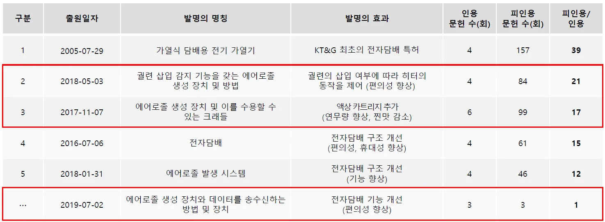
<그림 18. 전자담배 특허경쟁력(글로벌 시장)>
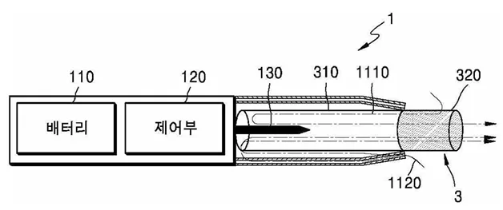
3.3.3. 기술사업화 알아본 바와 같이 KT&G는 전자담배 부문에만 3천개 이상의 특허를 출원하였고, 특허점유율 측면에서 Top Player들을 제치고 국내∙외 시장에서 최상위권을 달성하고 있다. 그렇다면 경쟁사들과 차별화되는 KT&G만의 원천기술이자 핵심기술이 무엇인지 알아보기 위해 <표 10>과 같이 출원된 모든 특허들의 ‘피인용 문헌 수/인용 문헌 수’를 핵심기술에 대한 지표로 삼아 분석하였다. 참고로 본 지표가 높은 특허는 이를 피인용한 주체들의 수가 많다는 의미이므로 KT&G의 핵심특허로 볼 수 있고, 동시에 원천기술임을 의미한다.
지표를 내림차순으로 정렬한 결과, 전자담배가 출시되기 한참 이전 시점인 2005년에 출원한 ‘가열식 담배용 전기 가열기’가 39로 가장 높았다. 다음으로 ‘궐련 삽입 감지(이하 생략)’와 ‘에어로졸 생성 장치(이하 생략)’ 특허가 뒤를 따랐다. 이하에서는 <표 10>의 하이라이트 표시된 KT&G의 핵심기술들이 기술사업화로 연결되어 소비자들의 흡연 만족도를 높이고, 편의성을 향상시킨 사례를 분석하였다.
<표 10. KT&G 핵심특허 리스트>
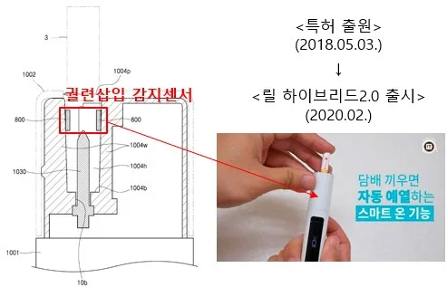
<그림 19. 기술사업화 사례①(릴 하이브리드1.0) [40]>
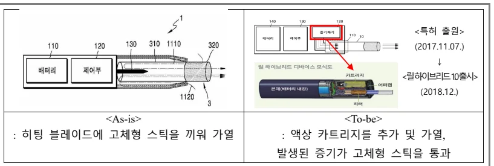
<그림 20. 기술사업화 사례②(릴 하이브리드2.0) [41]>
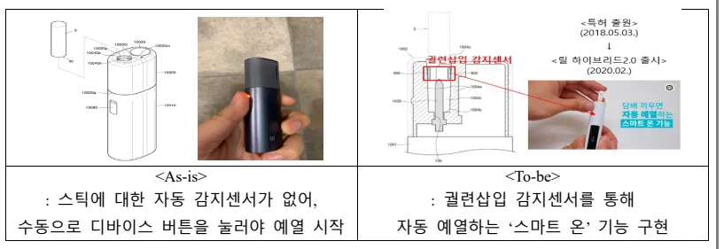
<그림 21. 기술사업화 사례③(릴 에이블 프리미엄) [42]>
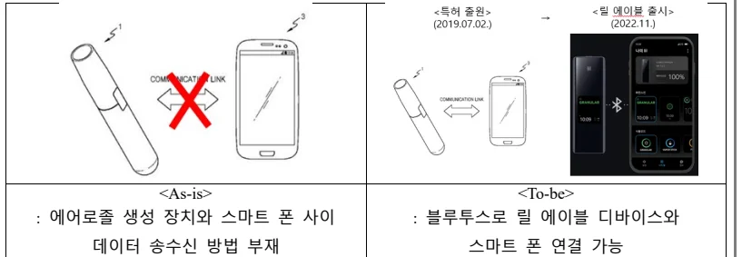
사례① 액상 카트리지를 결합한 릴 하이브리드1.0 출시 KT&G 릴 하이브리드1.0 출시 배경에는 2017년 11월 출원한 ‘에어로졸 생성 장치 및 이를 수용할 수 있는 크래들’ 특허에 있었다. 주요 발명의 효과는 액상 카트리지 추가였고, ‘피인용 문헌 수/인용 문헌 수’ 지표가 17로써 KT&G의 핵심특허 Top 3에 해당되는 원천기술로 볼 수 있다. 실제 본 특허는 출원으로부터 약 1년 뒤, 2018년 12월 릴 하이브리드1.0 제품 출시로 연결되었다.
기존 HNB 제품은 고체형 스틱을 히팅 블레이드에 꽂아 고온(315℃)으로 가열하는 과정에서 특유의 찐냄새가 발생하는 단점이 있었다. 하지만 릴 하이브리드는 액상형 카트리지를 저온(160℃)으로 먼저 가열 후 발생된 증기가 고체형 스틱을 통과하도록 하였다. 즉, 고체형 스틱을 직접 가열하지 않는 구조로 설계함으로써 특유의 찐내를 감소시킬 수 있었다. 또한, 기존 HNB 제품에 대한 소비자들의 대표적 불만사항이었던 연무량(흡연시 발생하는 연기의 양) 부족현상을 액상 가열을 통해 증기의 발생량을 증가시킴으로써 기존 궐련과 유사한 연무량 수준으로 개선시켰다.
그 결과, KT&G의 릴 하이브리드 제품은 이들의 모든 HNB 제품군 중에서도 소비자들에게 가장 호평을 받고 있다. 이는 액상 카트리지를 추가한 하이브리드 구조가 핵심이었으며, KT&G는 업계 최초로 관련 특허를 출원하고 1년만에 제품화에 성공하여 경쟁사들과 차별화할 수 있었다.
사례② ‘스마트 온’ 기능을 추가한 릴 하이브리드2.0 출시 릴 하이브리드2.0 제품에서는 업계 최초로 궐련 삽입 감지센서를 통해 궐련을디바이스에 삽입하면 동시에 자동 예열되는 스마트 온 기능을 구현하였다. 이는 KT&G가 2018년 5월 출원한 ‘궐련 삽입 감지 기능을 갖는 에어로졸 생성 장치 및 방법’ 특허가 실제 제품화로 연결된 사례이며, ‘피인용 문헌 수/인용 문헌 수’ 지표가 21로 핵심특허 리스트 Top2에 해당된다.
기존 제품에는 스틱에 대한 자동 감지센서가 없어 수동으로 디바이스 버튼을 눌러야 예열이 시작되었다. 즉, 흡연할 때마다 2초 내외로 버튼을 누르는 번거로움이 있었으나, KT&G는 본 특허의 기술사업화를 통해 궐련 삽입 시 디바이스가 자동 예열 되도록 하였다. 이러한 ‘스마트 온’ 기능 구현을 통해 별도의 작동 버튼을 없앨 수 있었고, 대신 OLED 디스플레이를 장착하여 배터리, 카트리지, 스틱의 잔량 등 표시를 통해 소비자 경험을 크게 향상할 수 있었다.
사례③ ‘스마트 폰 연계 기술’을 접목한 릴 에이블 프리미엄 출시 KT&G는 2019년 7월, ‘에어로졸 생성 장치와 데이터를 송수신하는 방법 및 장치’ 특허를 출원하고, 이를 제품화한 릴 에이블 프리미엄 제품을 2022년 11월 출시하였다. 본 특허는 ‘피인용 문헌 수/인용 문헌 수’ 지표가 1로 KT&G의 핵심특허로 보긴 어렵지만 스마트 폰과의 연결을 통해 소비자의 편의성을 향상한 대표 사례로 볼 수 있다.
기존에는 에어로졸 생성 장치와 스마트 폰 사이 데이터를 송수신할 수 있는 방법이 없었으나, KT&G는 관련 특허를 출원하고 실제 제품화까지 성공하였다. 주요 기능은 블루투스를 통해 릴 에이블 디바이스와 스마트 폰과의 연결이 서로 가능하도록 한 것이다. 특히, 전용 어플리케이션을 통해 다양한 기능을 제공하고 있는데, 전자담배 디바이스로 전화∙문자∙앱 알림 확인이 가능하다. 그리고 전용 앱을 통해 내 디바이스 위치 확인이 가능하도록 하는 등 소비자 편의성을 향상시키고, 경쟁사 제품들과 차별화 한 사례에 해당된다.
4. 연구결과 종합
연구결과를 종합했을 때, 첫 번째 RQ인 ‘국내∙외 흡연율 감소 추세에도 불구하고 KT&G는 어떻게 지속 성장할 수 있었는가?’에 대한 결과는 다음과 같다.
① 틈새시장 진출의 성공이다. 기존 궐련 시장은 레귤러∙고타르 위주였으나, 초슬림∙저타르란 틈새시장에서 ‘ESSE’ 궐련의 브랜딩에 성공하였다. 이는 부정적 외부효과 최소화를 위한 ‘ESSE’만의 부드럽고, 순하며, 유해물질을 감소한 결과이고, 또한 Pavitt’s Taxonomy에 따른 성공적인 브랜드 이미지 구축의 결과이다.
② 글로벌 시장 개척의 성공이다. 그 동안 담배 제조사들은 흡연의 부정적 외부효과로 인한 정부 규제 강화와 흡연율의 감소로 매우 어려운 시기를 맞이하였다. 특히, 담배시장 개방과 민영화 등으로 공기업의 DNA가 강했던 KT&G에게 위기의 시기가 있었으나, 글로벌 시장을 지속적으로 개척한 결과 2022년 기준, 해외 매출(비중)이 1.0조원(37.8%)으로 확대되었다.
③ 전자담배로의 패러다임 전환의 성공이다. 현재 전자담배는 궐련과 유사한 흡연감을 제공하면서도, 냄새와 재가 발생되지 않는 장점으로 소비자의 각광을 받고 있다. 이는 부정적 외부효과 최소화를 위한 혁신의 결과물이며, 그 동안 궐련으로 대표된 흡연의 패러다임 전환이라고 볼 수 있다. 또한, 경쟁사인 필립모리스와의 해외 판매계약 체결로 관련 매출액이 급진적으로 성장하고 있다.
이상 3가지의 주요 이유로 흡연에 대한 부정적 시각과 흡연율 감소 추세에도 불구하고, KT&G는 지속 성장한 것으로 판단된다.
<그림 22. 지속성장 전략(RQ 1)>
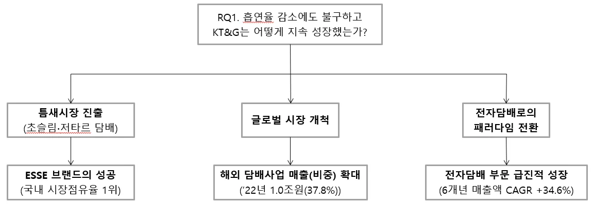
다음으로 두 번째 RQ인 ‘전자담배 시장의 후발주자인 KT&G는 어떻게 국내 시장점유율 1위를 달성할 수 있었나?’에 대한 연구결과는 다음과 같다.
① Fast Follower 전략의 성공이다. KT&G 최초 전자담배인 릴 솔리드 제품은 일체형 배터리 아키텍처를 도입하여 연속 흡연을 가능하도록 하였고, 아이코스 히츠와 호환이 가능하여 전환 비용을 낮출 수 있었다. 이를 통해 필립모리스 등 선도자의 소비자 Lock-in을 성공적으로 해제하였고, 이후에는 Fast Follower 전략으로 시장을 지배하였다. 특히, 기존 제품의 단점을 보완한 신규 제품의 신속한 출시로 경쟁사 대비 Lead Time 최소화를 통해 소비자 니즈를 선점코자 하였다.
② 특허 혁신을 통한 전유성을 확보하였다. 전자담배 산업은 Pavitt’s Taxonomy에 따라 과학기반형에 해당되며, 특허 등 전유성 확보가 매우 중요하다. 또한, Utterback 관점에서 현재 유동기(Fluid Phase)인 전자담배 산업의 특성상, 주요 Player간 특허 경쟁이 매우 치열하다. KT&G는 최근 5년(2018~2023년) 동안 총 3,176건의 특허를 출원함으로써 국내∙외 시장 모두 최상위권의 특허점유율을 달성하였고, 이를 통해 전유성을 확보한 것으로 판단된다.
③ 원천기술의 기술사업화에 성공하였다. KT&G의 모든 특허를 ‘피인용 문헌 수/인용 문헌 수’로 분석하여, 핵심특허를 확인하였고, 그 중 일부가 주요 HNB 제품에 적용된 것을 확인하였다. 특히, 업계 최초로 액상형 카트리지를 추가하고, 스마트 온 기능을 구현한 것은 경쟁사와 차별화된 대표적 사례에 해당된다.
이상 3가지의 주요 이유로 KT&G는 전자담배 시장의 후발주자임에도 불구, 출시 후 약 5년만에 국내 시장점유율 1위를 달성한 것으로 판단된다.
<그림 23. 시장점유율 추격 전략(RQ 2)>
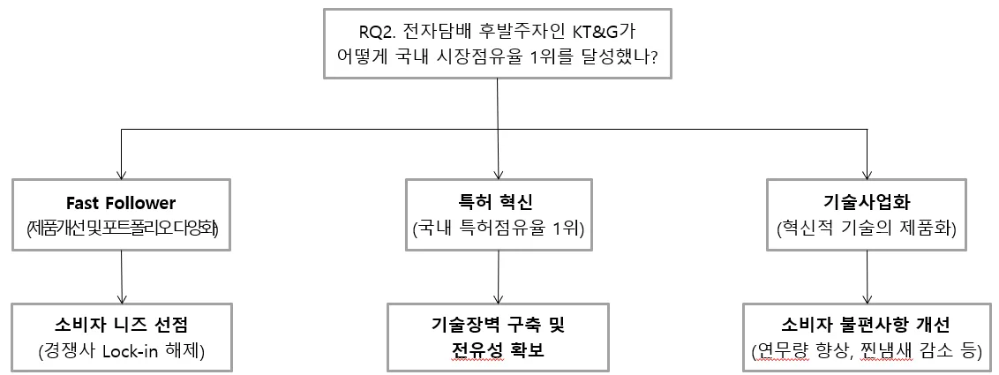
5. 결론 및 시사점
본 사례연구에서는 국내 최대 담배 제조사인 KT&G를 중심으로 분석하였다. 흔히 담배 산업은 주류, 도박 산업과 함께 대표적인 죄악 산업(Sin Industry)에 속하여 사회 구성원들이 부정적으로 인식하는 산업 중 하나이다. 왜냐하면 담배 회사가 생산하는 제품과 서비스가 중독성이 있으며, 이 중독성이 가족과 지역 사회에 부정적 영향을 미친다는 점 때문이다[43].
이에 따라 우리나라를 포함한 각국 정부는 담배에 대한 다양한 규제 정책을 펼치고 있고, 앞으로도 더욱 심화될 것으로 예상된다. 최근 영국에서 발의한 ‘금연법’만 보더라도 2009년 이후 출생자부터 담배 구입을 금지시킴으로써 담배연기 없는 세상(Smoke-Free World)으로 그 전환속도가 가속화됨을 알 수 있다.
즉, 담배 제조사를 둘러싼 환경은 매우 부정적인 상황에 놓여있다. 그럼에도 불구하고, KT&G의 담배사업 부문 매출액은 6개년 CAGR 8.66%로 성장 중이며, 국내 궐련형 전자담배 시장에서 글로벌 경쟁자들을 제치고 시장점유율 1위를 달성하였다. 그 결과, KT&G의 2023년 연결 매출액은 5.9조원 수준이며, 오는 2027년에는 10.2조원의 매출 달성을 자체적으로 전망하기도 하였다.
따라서, 본 사례연구는 담배에 대한 부정적인 환경 속에서도 KT&G가 지속 성장한 배경과 혁신 전략을 분석하는데 그 의의가 있다. 특히 이들이 지속성장 할 수 있었던 핵심 성공요인(Key Success Factor)은 3가지 요인으로 분석된다.
첫 번째로, 부정적 외부효과 최소화에 성공하였다. 초슬림∙저타르 궐련 ‘ESSE’의 틈새시장 진출과, 전자담배로의 패러다임 전환에 성공한 것이 대표적이다.
두 번째로, 궐련형 전자담배의 Fast Follower 전략에 성공하였다. KT&G는 필립모리스 등 선도자 Lock-in을 해제하고, 신제품 Lead-Time 최소화를 통해 지배적 디자인 확보를 위한 노력을 기울였다.
마지막으로, 전유성 확보 및 기술사업화에 성공하였다. KT&G는 특허 혁신을 통해 R&D 결과물의 수익성을 배타적으로 보호받을 수 있었고, 다양한 원천기술을 바탕으로 소비자들의 니즈를 충족할 수 있는 제품혁신에 성공하였다.
이상 KT&G의 지속성장 요인에 대해 연구하였으나, 다음과 같은 한계점 및 추가 연구과제도 존재한다. 이론적 배경에서 Pavitt’s Taxonomy에 따라 궐련산업과 전자담배 산업 모두 가격에 민감한 소비자 특성으로 공정혁신도 중요하다고 기술하였으나, 본 연구에서는 제품혁신 사례에 중점을 두었고 공정혁신 사례는 별도로 분석하지 않았다. 따라서, KT&G의 원가 절감, 생산성 향상, 자동화 노력 등 공정혁신 사례에 대한 추가 연구가 필요하다.
그리고 KT&G의 핵심특허 또는 원천기술을 조사함에 있어 ‘피인용 문헌 수/인용 문헌 수’를 기준으로 분석하였으나, 본 지표가 아닌 다른 기준이 있을 수 있다. 마지막으로 전유성 확보 방법에 있어서도 특허출원을 중심으로 분석하였다. 하지만 특허 외에도 상표, 디자인, 영업비밀, 노하우 등 다양한 전유성 확보 방법이 존재하므로, 이에 대한 추가 사례 연구가 필요할 것으로 판단된다.
Reference
- OECD, Health at a Glance 2023: OECD Indicators, OECD, Paris, 2023 (p. 87)
- KT&G, KT&G Investor Day 2023 Presentation, KT&G, 2023 (p. 10) [3,4,33,34] KT&G, Annual Reports & Business Reports (2014-2023), KT&G (그래프 직접 작성)
- 최성은, 흡연자의 의료비 지출과 흡연이 의료비 지출에 미치는 효과, 재정학연구, 9권, 2호, 1-21쪽, 2016.5
- 박환재, 담배가격인상의 후생효과, 산업경제연구, 29권, 1호, 51-71쪽, 2016.2
- 홍성훈, 담배가격이 담배수요에 미치는 영향, 보건경제와 정책연구, 23권, 4호, 67-81쪽, 2017.12
- 조신행, 우리나라 담배규제 정책의 방향, 한국보건사회연구원, 307권, 2-4쪽, 2022.5
- Robert F., Schumpeter, product innovation and public policy: the case of cigarettes, Entrepreneurships, the New Economy and Public Policy, pp 11-32, 2005 [10,20,24,26,29,30] 박재찬, 백권호, 시장개방에 대한 기업의 효과적인 대응 사례:KT&G의 제품 및 사업경쟁력 강화, 글로벌화, CSR 전략을 중심으로, 지역산업연구, 40권, 3호, 307- 333쪽, 2017.1
- 김효근, 세계 담배산업 동향, 세계농업, 158호, 59-81쪽, 2013.10
- 이성규, 김진영, 담배의 진화, 대한의사협회지, 63권, 2호, 88-95쪽, 2020.1 [13,23] 조홍준, 궐련, 전자담배, 가열담배의 유해성 비교, 대한의사협회지, 63권, 2호, 96-104쪽, 2020.1
- NICE평가정보 산업분석팀, Industry Report(담배산업), KISLINE, 2023.12 (p. 6)
- Anatomy of a Cigarette, ResearchGate, https://www.researchgate.net/figure/Anatomy-of-a- Cigarette-Source-Peel-Public-Health_fig1_305519262
- Schematic figures of HTP, MDPI Open Access Journals, https://www.mdpi.com/2305-6304/11/6/525?type=check_update&version=2
- Common type of e-cigarettes, Tobacco Tactics, https://tobaccotactics.org/article/e-cigarettes-the- basics/ [18,19] Foundation for a Smoke-free World, Global Trends in Nicotine, Foundation for a Smoke-free World, 2021.12 (p. 4, 6)
- 기획재정부 국고국 출자관리과, 2023년 국내 담배 판매량 보도자료, 기획재정부, 2024.1 (p. 2) (그래프 직접 작성)
- K.Pavitt, Sectoral patterns of technical change: towards a taxonomy and a theory, Research Policy, 1984
- 궐련의 크기별 분류, Rad Golden Leaf General Trading LLC, https://rglgt.com/filter-super- slim-size
- 황병우, KT&G, 작년 매출 5조8천724억원 달성…"역대 최고 매출 기록 경신", 파이 낸셜신문, 2024.2
- 김범준, [식품박물관]①1초에 50갑 팔리는 '에쎄'..초슬림 담배 '우뚝', 이데일리, 2021.9
- 김수빈, [A 브랜드스토리 79] KT&G의 효자상품 '에쎄'...국내 넘어 해외로, 아시아에이, 2023.7
- 최승근, KT&G, 초슬림 담배 ‘에쎄’ 누적판매 9000억 개비 돌파, 데일리안, 2024.2
- 한유정, 이다연, [Rival Match: KT&G vs PMI] 너에게 난 나에게 넌, 한화투자증권, 2024.1 34
- 박준호, [글로·아이코스 비교해 보니] 글로 ‘연속흡연’ 가능 … 아이코스 ‘담배 느낌 그대로’, 서울경제, 2017.8
- 정재웅, 후발주자의 권리?…아이코스·글로 장점만 모았다, 비즈워치, 2017.11
- JM Utterback, et al., A dynamic model of process and product innovation, Omega 3:6, pp 639-656, 1975
- 혁신의 패턴, Operational Excellence, Innovation, Change, https://kairosmanagement.wordpress.com/2013/12/30/utterbacks-model-for-innovation/
- 릴 하이브리드 디바이스 모식도, Annual Report, KT&G, 2018, (p. 40)
- 스마트 온 기능, IT조선, https://it.chosun.com/news/articleView.html?idxno=2020022101301
- 릴 에이블 블루투스, 음주단장의 맛있는 예술공간, https://blog.naver.com/ghgh2332/222928941517
- 김효숙, 기업 CSR 활동의 목적 귀인에 영향을 미치는 요인들에 관한 연구 죄악 산업의 경우를 중심으로, Journal of Public Relations, 20권, 5호, 22-44쪽, 2016.12